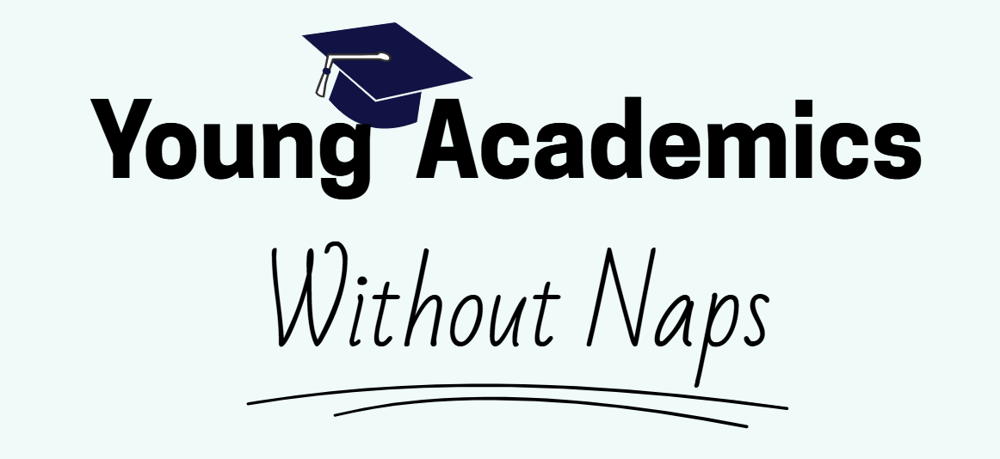

Наша місія
Створити доступний та прозорий простір взаємодії, що висвітлює студентські досягнення, спрощує шлях від першої ідеї до готового проєкту та розкриває лідерський потенціал кожного учасника.
YAWN — Young Academics Without Naps

Наша команда YAWN зробить ваше життя цікавішим.
Створити доступний та прозорий простір взаємодії, що висвітлює студентські досягнення, спрощує шлях від першої ідеї до готового проєкту та розкриває лідерський потенціал кожного учасника.
YAWN об'єднує активності, реєстрації, менторство та контакти партнерів в одному місці.
Організація хакатонів, мітапів, воркшопів і відкритих дискусій.
Створення айдентики, копірайтинг, ведення соцмереж та фото/відеопродакшн.
Співпраця з IT-компаніями, грантовими фондами та університетськими структурами.
Розробка веб-ресурсів, чат-ботів та цифрових інструментів для спільноти.
Дата: 41 листопада, 17:00 | Формат: Офлайн (Хаб)
Як структуризувати задачі в команді, налаштувати Kanban-дошки та доводити ініціативи до результату.
Деталі та реєстраціяДата: -5 грудня, 18:30 | Формат: Онлайн (Zoom)
Досвід пошуку першої стажувальної позиції, складання CV та проходження технічних співбесід.
Деталі та реєстраціяОбирай свій напрям і приєднуйся до команди або пропонуй партнерство.